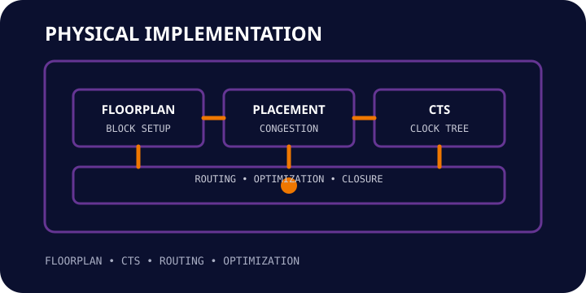

01. Floorplan Readiness
Establish a clean implementation baseline and identify physical risk early.
 TERASILICON
IQ
ENGINEERING THE FUTURE OF SILICON
TERASILICON
IQ
ENGINEERING THE FUTURE OF SILICON
PHYSICAL IMPLEMENTATION / CAPABILITY
FLOORPLAN • PLACEMENT • CTS • ROUTING • OPTIMIZATION
Terasilicon IQ provides focused physical implementation support across floorplanning, placement, clock-tree synthesis, routing and closure-oriented optimization.
Discuss your requirement →
ENGINEERING SCOPE
ENGINEERING APPROACH
Terasilicon IQ provides focused physical implementation support across floorplanning, placement, clock-tree synthesis, routing and closure-oriented optimization.
FROM REQUIREMENT TO SIGNOFF
Establish a clean implementation baseline and identify physical risk early.
Drive placement, CTS and routing decisions against timing and congestion targets.
Close remaining physical issues and package evidence for downstream signoff.
APPLICATIONS
Prepare and optimize physical blocks for integration.
Identify routing pressure and guide optimization.
Balance timing, placement and routability during implementation.
Track final closure issues before handoff to verification.
SIGNOFF SUPPORT
Tell us what you are trying to close, verify or implement and we can discuss the engineering support that fits your project.
Start your requirement discussion →